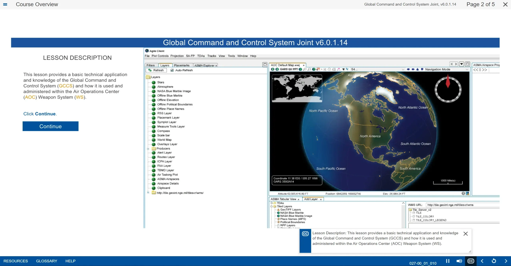

A.O.C. - Air Operations Center
The AOC course was produced for the FAA in order to train employees on Air Operation Center. The senior command and control element of the U.S. Air Force's Theater Air Control System and provides operational-level command and control of air, space, and cyberspace operations, as well as joint and combined air, space, and cyberspace operations. Developed utilizing HTML5 Canvas animations and a custom JS framework to control the sequencing of content. This course was designed to live on the Moodle LMS and utilizes the SCORM 1.2 API to store and retrieve learner data. Launched via in-house web server. Packaged StoryLine files.
This product is property of S.A.I.C.,
I am only able to provide
visual representations of the product in the form of screenshots.
